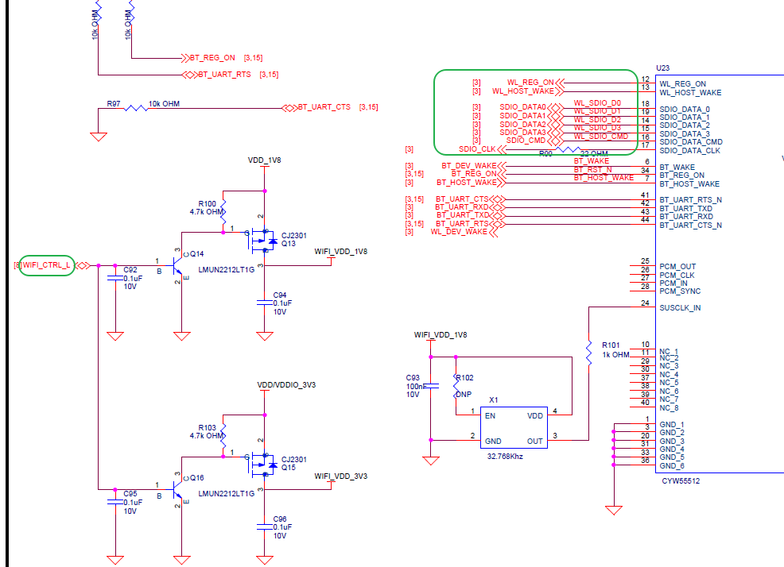
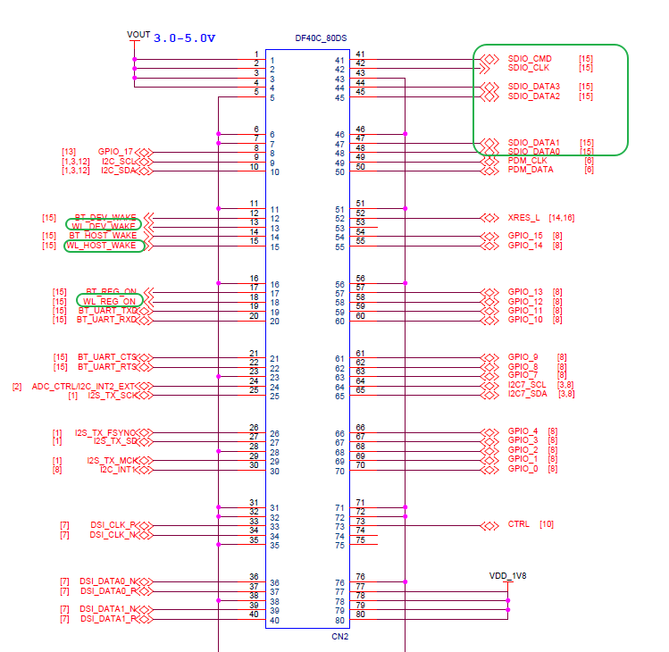
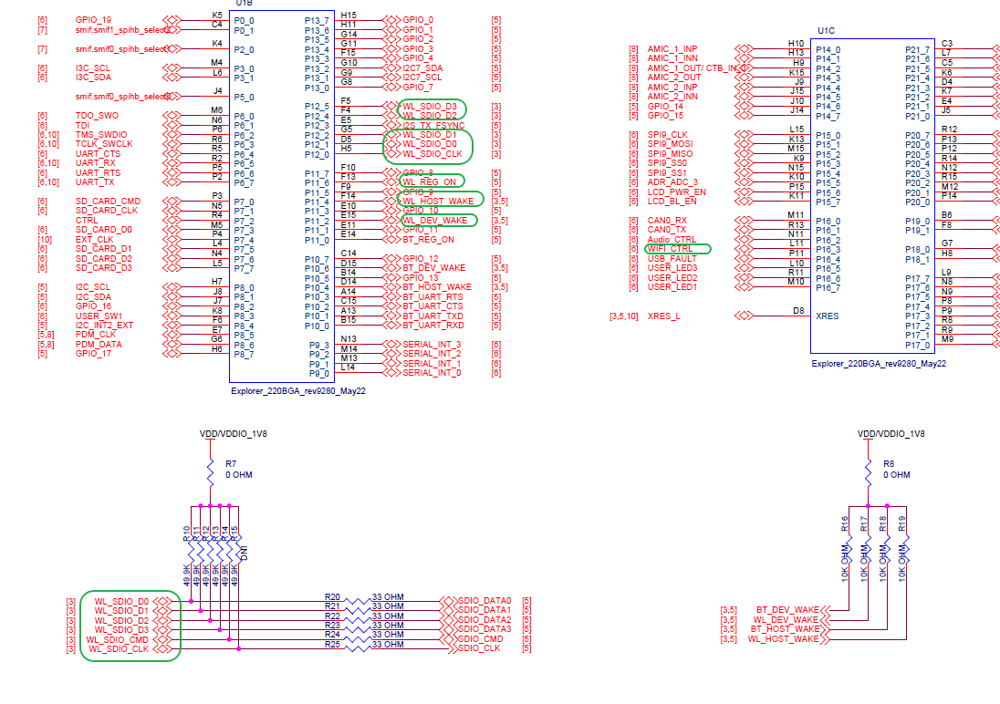
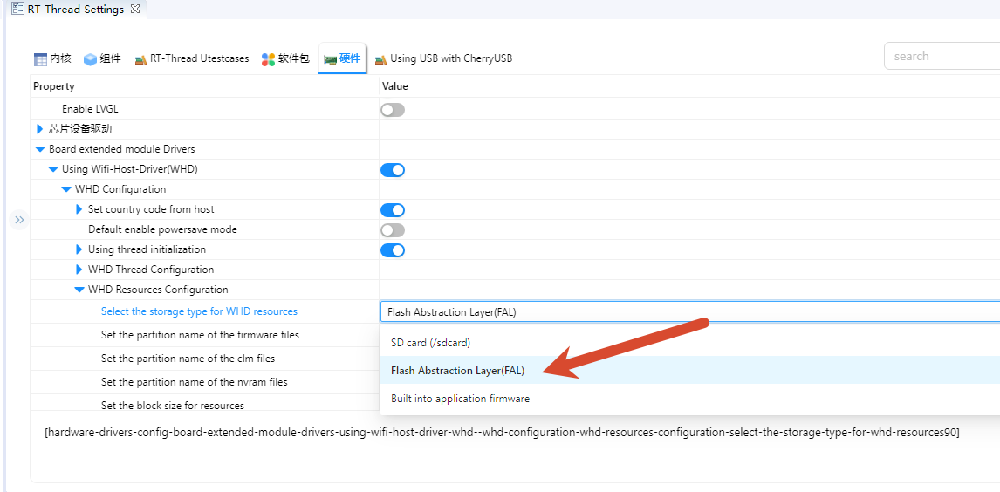
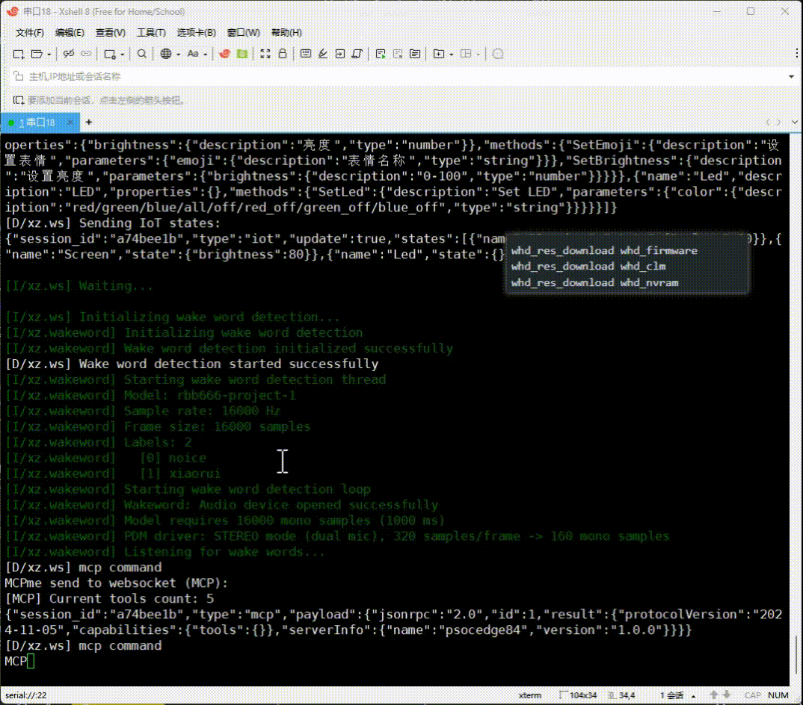
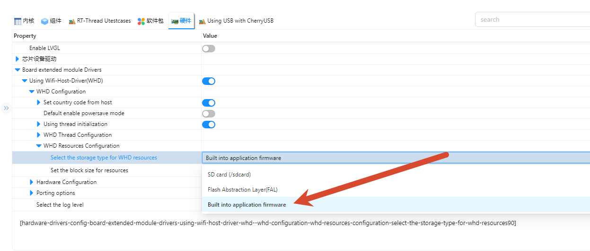
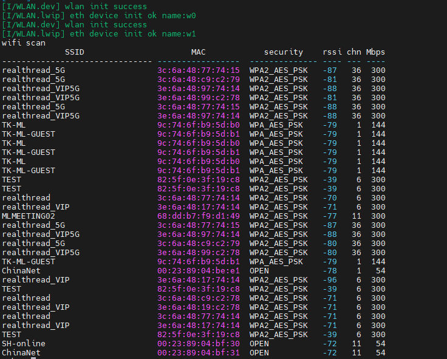
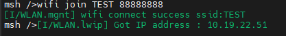
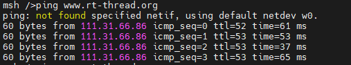
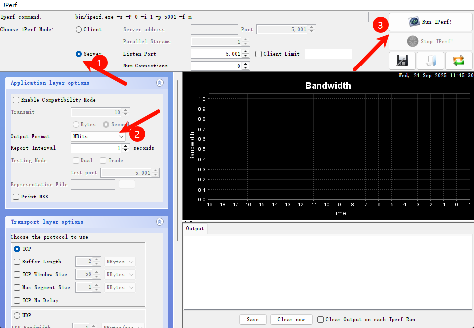

Edgi_Talk_M55_WIFI 示例工程
中文 | English
简介
本示例工程基于 Edgi-Talk 平台，演示 WIFI功能，运行在 RT-Thread 实时操作系统 (M55 核) 上。 通过本工程，用户可以快速体验 WIFI的联网功能，并验证WIFI模块的接口，为后续WIFI的开发提供参考。
硬件说明
WIFI接口

BTB座子

MCU接口

软件说明
工程基于 Edgi-Talk 平台开发。
示例功能包括：
WIFI的扫描
WIFI的连接
Iperf测速
工程结构清晰，便于理解WIFI驱动和 RT-Thread 系统的配合使用。
使用方法
编译与下载
打开工程并完成编译。
使用 板载下载器 (DAP) 将开发板的 USB 接口连接至 PC。
通过编程工具将
Debug/rtthread.hex烧录至开发板。
准备 Wi-Fi 资源
WHD 启动 Wi-Fi 前需要三个资源文件：固件、CLM 射频法规表和板级 NVRAM。当前文档默认介绍 FAL 分区方式，即 Wi-Fi 资源独立保存到 whd_firmware、whd_clm、whd_nvram 分区中。该方式下，烧录 Debug/rtthread.hex 只会写入应用镜像，Wi-Fi 资源需要通过串口命令单独写入。Edgi-Talk 默认提供的资源文件位于工程根目录的 resources/ 文件夹中。
当前方式：FAL 分区加载
在 settings 中选择：

Edgi-Talk 默认提供的资源文件位于工程根目录的 resources/ 文件夹中。
whd_res_download whd_firmware
whd_res_download whd_clm
whd_res_download whd_nvram
命令会切换到 YMODEM 传输模式，请使用支持 YMODEM 上传的终端软件（如 Xshell）发送 resources/ 下对应文件。三者写入完成后重启开发板。
每次收到
Download ... success提示后再进行下一项三者写入完成后重启开发板即可让 WiFi 读取新的资源；若后续更新固件包，同样需要重新执行
whd_res_download。

拓展：Wi-Fi 资源随应用镜像烧录
如果希望 Wi-Fi 固件随着 Debug/rtthread.hex 一起烧进板子，可以切换为 WHD_RESOURCES_IN_MEMORY 模式：

该方式会把工程根目录 resources/ 下的资源文件编进应用镜像：
resources/55500A1.trxcseresources/55500A1.clm_blobresources/cyw55513modpse84som_rev3.txt
重新编译后，Wi-Fi 固件、CLM 和 NVRAM 会成为应用镜像的一部分。烧录 Debug/rtthread.hex 后不需要再执行 whd_res_download whd_firmware、whd_res_download whd_clm、whd_res_download whd_nvram。如果更新 Wi-Fi 资源文件，需要重新编译并重新烧录应用镜像。该方式会增加应用镜像大小，当前 CYW55500 固件和 CLM 约增加 240 KB Flash，再加上 NVRAM 文本。
注意：RT-Thread Studio 生成的 makefile 会在 Debug 目录下执行编译，而 ENV/SCons 会从工程根目录执行编译。当前工程已经按这个差异处理：Studio 构建时从 ../resources/ 查找资源，ENV/SCons 构建时从工程根目录的 resources/ 生成资源代码。因此资源文件请放在工程根目录 resources/，不要只放在 Debug/resources/。
拓展：SD 卡资源加载方式
WHD_RESOURCES_IN_SDCARD 会在运行时从 /sdcard 读取资源。默认文件名为 /sdcard/55500A1.trxcse、/sdcard/55500A1.clm_blob 和 /sdcard/cyw55513modpse84som_rev3.txt。该模式会同时启用 BSP SD 卡文件系统挂载支持。
运行效果
烧录完成后，开发板上电即可运行示例工程。
系统会自动初始化 WIFI设备。
用户可在 串口终端使用以下命令连接WIFI：
wifi scan

wifi join 名称 密码

ping www.rt-thread.org

网络连接完成后，可使用 iperf 进行性能测试。
在 packages\netutils-latest\tools 目录下提供了 jperf.rar 测速工具。
将其解压后，双击其中的 .bat 文件，即可启动工具，界面如下图所示：

在开发板终端输入以下命令（其中 电脑的 IP 请替换为实际地址），即可开始测速：
iperf -c <电脑的IP>
注意事项
可以使用电脑开热点进行测试，频段最好为2.4G。
启动流程
系统启动顺序如下：
+------------------+
| Secure M33 |
| (安全内核启动) |
+------------------+
|
v
+------------------+
| M33 |
| (非安全核启动) |
+------------------+
|
v
+-------------------+
| M55 |
| (应用处理器启动) |
+-------------------+
⚠️ 请严格按照以上顺序烧写固件，否则系统可能无法正常运行。
若示例工程无法正常运行，建议先编译并烧录 Edgi_Talk_M33_Template 工程，确保初始化与核心启动流程正常，再运行本示例。
M55 核由 M33 启动链路拉起。当前模板中，Edgi_Talk_M33_Template 已在板级初始化阶段调用
Cy_SysEnableCM55(MXCM55, CY_CM55_APP_BOOT_ADDR, 10)，因此旧版的select SOC Multi Core Mode -> Enable CM55 Core菜单可能不会再出现。